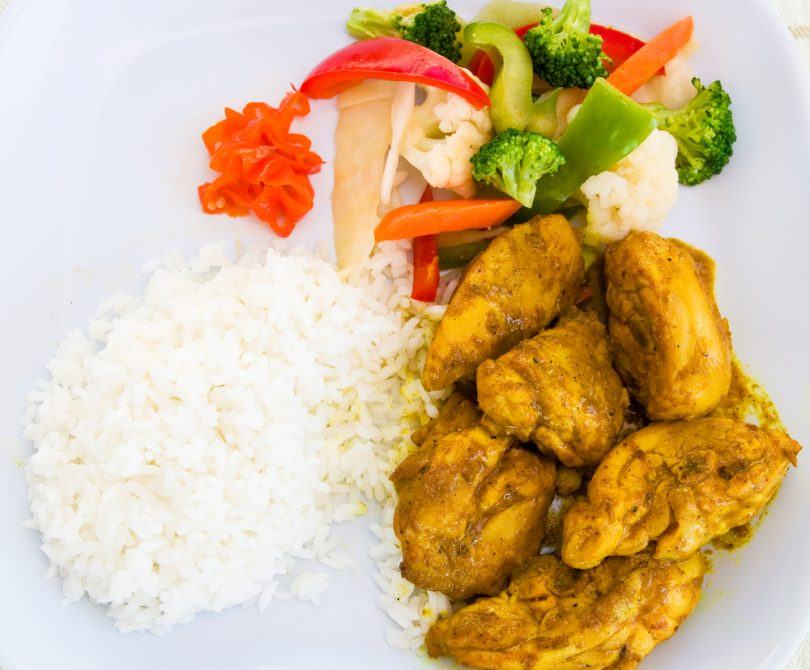

Home Page
Dame's Chicken Curry
Chicken Curry

Jamaican Chicken Curry
This is a simple yet tasty dish most jamaicans love. If your looking for a
curry inspired dish, this is the one.
INGREDIENTS
- 3lbs Chicken
- 2 Tablespoons curry powder
- 2 Medium onion, spring thyme, 5 cloves crushed garlic, 2 scotch bonnet pepper, 1 teaspoon black pepper
- 2 Teaspoons of salt
- 1 Cup of water
METHOD
- Clean, skin and cut the chicken, then wash the chicken with either
lemon juice or vinegar.
- Drain, then add the seasonings curry powder, onion, thyme, garlic
pimento(allspice), black pepper and salt and let marinate for awhile.
- In a skillet add 3 tablespoons of oil and let the oil heat up
- Add the chicken and seasoning
- Lightly brown the chicken for 5 minutes
- Add water and sctoch bonnet pepper. Let it cook for 30 minutes or
until done.
- Serve with white rice.